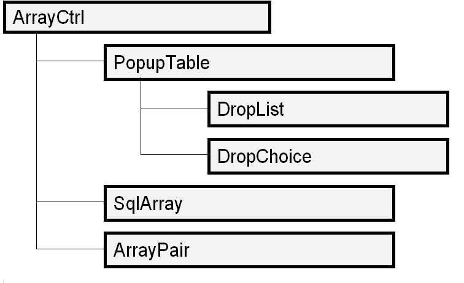
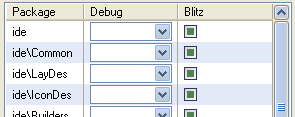

|

class ArrayCtrl : public Ctrl

ArrayCtrl implements basic grid functionality. It is typically used for display and editing of arrays of values or (heterogeneous) records. The records correspond to rows in the array, the individual fields within each record can be either bound to columns or to any generic Ctrl's, thus supporting basic master-detail functionality with practically no additional cost.
The standard derived classes extend various aspects of the ArrayCtrl functionality. SqlArray adds the nuts and bolts needed for editing SQL-based tables, whereas PopupTable couples the ArrayCtrl functionality with the drop-down mechanism very similar to the one used in popup menus. This opens the door for implementing drop-down controls like DropList (aka combo box) or DropChoice (usually used together with a control of the EditField or DataPusher family to support coupling native data editing with drop-down selection, widely used for history or commonly used predefined values. The ArrayPair is, as its name implies, a pair of ArrayCtrl's with arrow buttons between them allowing to visually select subsets of a certain set by moving its elements between the two lists.
The array data organization: indices and columns
There is a great deal of genericity supported by the ArrayCtrl with respect both to its source data and its visual presentation. Conceptually, the source array data is a matrix of Value's. There is a series of methods for accessing this source data, the basic ones being Set and Get. The rows are addressed by integer indices (zero based), the columns can be addressed either by integer indices as well, or alternatively any source column can be assigned an Id identifier and addressed by it. This is especially helpful in SQL-based tables, where the table column names can be used for the Id's. A pair of methods, GetPos and GetId, can be used to translate these two column addressing modes. In the code terminology, the columns in the source data matrix are called indices whereas the visual (output) columns are called simply columns.
The visual ArrayCtrl structure can be entirely independent of the source data structure (although it's seldom helpful to make the mapping completely arbitrary). Basically, each column can have an arbitrary number of indices defining its source data. Of course, the most common case is one index per column. This is also simplest to address, because the column indices are equal to the source data indices. However, many other combinations are possible, each of which can be handy in certain situations:
Index without a column: the most common of the "special" cases is used mainly for row id's or other internally important data without visual representation. The same behaviour can be obtained by making a column invisible.
Column without an index (a rownum column): this less common case can be used to display external data (not stored in the table).
Multiple columns sharing the same index: this can be used to display various aspects of a complex data object or to display the same source data in multiple ways (e.g., a temperature reading in Celsius and Fahrenheit degrees).
Column with multiple indices: can be used to display information gathered from multiple source data columns. This is used for instance in IconDes in TheIDE to display image identifiers together with their sizes in the list. This is the most complicated case because you have to implement a specific Display for such a multi-index column.
Note: in the current U++ version, the implementation of index-less columns (arrays with external data not stored in the source matrix) is rather awkward. It is planned to enhance this feature in the future by adding support for access to external data via a data accessor interface object.
ArrayCtrl GUI: selection, editing, and local menu
Array rows can be selected using the mouse or keyboard. ArrayCtrl's support both single-selection (plain cursor) and multiselection model. Of course, row selection can be controlled via the programmatic array interface as well. The selection and cursor always spans entire rows, it is not possible (without substantial patchwork) to select only certain columns or individual cells.
The ArrayCtrl rows can be inserted, edited and deleted either programmatically, or via common GUI elements (mouse and keyboard selection, local menu). It is possible to alter the standard ArrayCtrl local menu using the WhenBar callback.
Note: it is worth noting that the standard editing keys (Insert = row insertion, Ctrl+Enter = editing and Ctrl+Delete = deletion) are not hardcoded in the ArrayCtrl's Key method, they are mere hotkeys for the relevant local menu items. When you change the ArrayCtrl's local menu, the editing hotkeys change accordingly.
A special but rather important case of array editing is sorting: there is no specific standard GUI for that. If you aren't content with programmatic sorting (e.g. after opening a dialog or after loading the array data), you have to implement some GUI for that as well. In certain cases, it is cool to use the HeaderCtrl WhenAction method to allow sorting the array by clicking on the header columns; alternatively you can add a sort function to the array local menu or possibly somewhere else (like a standalone button in the dialog).
Insertion tricks: before, after, and the secrets of the AppendLine
In todays text editors, when you type a new letter, it is trivial to see where in the text will the new letter go. This is so because the caret is always positioned between a pair of successive letters and thus is well defines the insertion spot. Additionally, the caret can be placed in front of the first letter or after the last letter, which naturally allows typing some text at the very beginning or end.
When inserting new rows into the array controls, things are a bit more tricky. This is so because, unlike in the text editor, the cursor is not placed between two successive rows, but over a certain row. This is of course necessary to make row editing possible (note that in the aforementioned text editor analogy, a single letter is an atomic object whereas in the array it is a potentially complex structure consisting of many columns and data items). However, when it comes to row insertion, it has two main troubles as its implication:
|
1. |
It is necessary to decide somehow whether the new row will go above or below the cursor row. |
|
2. |
In an array with n rows, there are n+1 possible locations for a new row (before the row #0, #1 ... #(n-1) and after the last row), but only n distinct cursor locations. |
Over the years, during the development of U++, we experimented with multiple ways to overcome these logical problems. As a result of this, the ArrayCtrl supports a few methods allowing to fine-tune the row insertion mechanism. It is also worth noting that there are cases, like in the case of SQL-based tables, where the row ordering is arbitrary or implicit and the exact 'location' of a new row doesn't make any sense. In such cases, it is possible to replace array insertion function with the append function emphasizing the fact that the visual row order is unimportant and that insertion means merely adding a new record to the record set.
For arrays in which the order is important, there are two ways to solve the n+1 row positions dilemma:
|
1. |
Replacing the Insert function with a pair of functions for inserting a new row before / after the current row. |
|
2. |
Visually extending the array by adding a pseudo-row with no real data at its end; this creates the n+1-th cursor position necessary to denote all the available row insertion locations. |
In the first case, it is also possible to select which of the insertion functions (before / after) takes precedence (which of the two actions should be bound to the standard Insert hotkey). This corresponds to the BeforeAfterInserting and AfterBeforeInserting methods. The second case is called the AppendLine and is activated by setting the property with the same name.
To make all this even more interesting, a special mechanism called InsertAppend is available to make array filling as easy as possible. When activated and the user appends a new row at the table end, after pressing Enter (to commit the inserted row) another row is automatically added after it and opened for editing. This mechanism is turned on by default, but it can be disable by setting the NoInsertAppend property to true.
Categorized method summary
|
|
The following table summarizes ArrayCtrl methods according to the aspect of functionality they support together with a very brief description. For more thorough documentation of the individual methods see below.
Initialization and configuration
|
Reset
|
clears column & index definition and restores all ArrayCtrl default properties
|
IsEdit
|
true = array state automaton is currently in row editing mode
|
IsInsert
|
true = array state automaton is currently in row insertion mode
|
SetLineCy
|
sets array row height (global or individual for a single row)
|
GetLineCy
|
returns logical array row height (value set by preceding SetLineCy)
|
GetLineY
|
returns y position of given row (relative to table beginning)
|
[No]AppendLine
|
[do not] display an additional pseudo-row used for row insertion
|
IsAppendLine
|
returns actual value of the AppendLine property
|
ShowAppendLine
|
scrolls the table view to display the appending line
|
[No]Inserting
|
[do not] allow inserting new rows
|
IsInserting
|
returns actual value of the Inserting property
|
BeforeAfterInserting
|
allow inserting rows before / after current row (default = before)
|
AfterBeforeInserting
|
allow inserting rows before / after current row (default = after)
|
NoInsertAppend
|
do not autoinsert another row after committing last row insertion
|
IsEditing
|
true = (at least one column of the) ArrayCtrl supports editing
|
[No]Duplicating
|
[do not] allow row duplication
|
IsDuplicating
|
returns actual value of the Duplicating property
|
Appending
|
allow appending new row at the table end
|
IsAppending
|
returns actual state of the Appending property
|
AutoAppending
|
allow appending new row at the table end, Enter appends another one
|
IsAutoAppending
|
returns actual state of AutoAppending property
|
[No]Removing
|
[do not] allow table row removing
|
IsRemoving
|
returns actual state of the Removing property
|
[No]AskRemove
|
[do not] prompt user to confirm row removal
|
IsAskRemove
|
returns actual state of the AskRemove property
|
Moving
|
allow row swapping (moving a row before / after neighbouring row)
|
IsMoving
|
returns actual state of the Moving property
|
[No]Header
|
[do not] display table header
|
[No]Track
|
[do not] animate tracking table column widths
|
[No]VertGrid
|
[do not] display column breaks
|
[No]HorzGrid
|
[do not] display row breaks
|
[No]Grid
|
[do not] display both grids (VertGrid + HorzGrid)
|
GridColor
|
set grid line color
|
EvenRowColor
|
background color for even rows
|
OddRowColor
|
background color for odd rows
|
RowFormat
|
formats menu items substituting given word for the term 'row'
|
RowName
|
sets the context-relevant word to substitute for 'row' in the local menu texts
|
NoCursor
|
do not highlight cursor row
|
[No]MouseMoveCursor
|
automatically move cursor as the mouse moves (used e.g. in PopupTable)
|
[No]AutoHideSb
|
[do not] display scroll bar only when necessary
|
MultiSelect
|
enable selecting multiple rows at the same time
|
ColumnWidths
|
sets logical column widths using a formatted string, e.g. "1 5 10 10 5 1"
|
|
Array index & column structure management
|
IndexInfo
|
returns the IdInfo structure describing an index (see below)
|
AddIndex
|
adds a new index to the source data matrix
|
GetIndexCount
|
returns number of index columns (columns in the source data matrix)
|
GetId
|
returns identifier of a given index (given by its integral index)
|
GetPos
|
returns integral index of source matrix column (index) identified by an Id
|
SetId
|
sets the Id identifier for a given index (column of the source matrix)
|
AddKey
|
sets up the first index to act as primary key (often used for SQL tables)
|
GetKeyId
|
returns primary key identifier (equal to GetId(0))
|
AddColumn
|
adds a column-index pair to the table (one data column, one output column)
|
AddColumnAt
|
adds a column bound to a given index
|
AddRowNumColumn
|
adds a column without an index (used for external data)
|
GetColumnCount
|
returns number of (visual) columns in the table
|
FindColumnWithPos
|
locates table column according to given index number
|
FindColumnWithId
|
locates table column according to index identifier
|
ColumnAt
|
returns the ArrayCtrl::Column structure describing given column
|
HeaderTab
|
returns the HeaderCtrl::Column structure for the given column
|
HeaderObject
|
returns a reference to the HeaderCtrl object for this table
|
SerializeHeader
|
serialize header layout information (column widths etc.)
|
AddCtrl
|
adds an outer control-index pair to the table (one data column, one outer Ctrl)
|
AddCtrlAt
|
adds an outer control bound to a given index
|
AddRowNumCtrl
|
adds an outer control without an index - used (seldom) for external data
|
SetDisplay
|
sets display for a given table column or cell
|
GetDisplay
|
returns column / cell display
|
SetCtrl
|
sets a Ctrl object for custom editing of a given cell
|
GetTotalCy
|
returns total row height
|
GetLineAt
|
locate table row when given an y position (relative to table top)
|
GetClickColumn
|
returns column number of last clicked column (Null if clicked outside existing rows)
|
GetClickRow
|
returns row number of last clicked row (Null if clicked outside existing rows)
|
GetClickPos
|
returns Point(GetClickColumn(), GetClickRow())
|
|
Data setting & retrieval
|
SetCount
|
sets number of rows in the array
|
SetVirtualCount
|
sets number of rows in the array with external data
|
GetCount
|
returns number of rows
|
Clear
|
clears array data, identical to SetCount(0)
|
Shrink
|
shrinks source data matrix to the minimum necessary size
|
Get
|
returns given Value element of the source data matrix
|
GetOriginal
|
returns given element of source data matrix before editing
|
Set
|
sets given element of the source data matrix
|
GetKey
|
returns given primary key (column #0 in the data matrix)
|
GetOriginalKey
|
returns 'old' value of primary key before editing
|
GetColumn
|
returns value of a given output column (according to its index mapping)
|
GetConvertedColumn
|
returns value of a given output column after applying its Convert
|
ReadRow
|
returns a row of the source data matrix
|
Add
|
adds a new row at the end of table
|
Insert
|
inserts a new row into the table
|
Remove
|
removes a given table row
|
SwapUp
|
exchanges a table row with the preceding row
|
SwapDown
|
exchanges a table row with the next row
|
Sort
|
sorts table rows using a given predicate
|
ClearCache
|
clears data conversion cache
|
InvalidateCache
|
invalidates given table row in the conversion cache
|
|
Cursor & selection management
|
GetSelectCount
|
returns number of currently selected rows
|
IsSelection
|
checks whether any rows are selected (identical to GetSelectCount() > 0)
|
Select
|
selects / unselects given row or a series of rows
|
IsSelected
|
checks whether given row is selected
|
ClearSelection
|
clears the current selection
|
SetCursor
|
moves array cursor to a new row
|
KillCursor
|
removes the cursor away from the table
|
CancelCursor
|
cancels editing of current row
|
IsCursor
|
checks whether cursor is in the table (identical to GetCursor() >= 0)
|
GetCursor
|
returns current cursor row, -1 when none
|
GoBegin
|
moves the cursor to the first table row
|
GoEnd
|
moves the cursor to the last table row
|
GetCursorSc
|
returns the location of the cursor row within the table view area
|
ScCursor
|
scrolls the table to move the cursor row to given location within the table view
|
CenterCursor
|
scrolls the table to move cursor into the middle of the current view
|
ScrollInto
|
scrolls the table by minimum amount necessary to make given row visible
|
ScrollIntoCursor
|
scrolls the table by minimum amount necessary to make cursor row visible
|
GetScroll
|
returns current table scrollbar location
|
ScrollTo
|
sets table scrollbar location
|
Find
|
locates table row containing a given element
|
FindSetCursor
|
moves the cursor to table row containing a given element
|
|
GUI elements
|
StdBar
|
the default array local menu
|
IsModified
|
checks modification state of given array cell
|
StartEdit
|
open current array row for editing
|
GetEditColumn
|
returns the column being currently edited
|
DoEdit
|
corresponds to the local menu 'Edit' function
|
DoInsert
|
corresponds to the local menu 'Insert' function
|
DoInsertBefore
|
corresponds to the local menu 'Insert before' function
|
DoInsertAfter
|
corresponds to the local menu 'Insert after' function
|
DoAppend
|
corresponds to the local menu 'Append' function
|
DoRemove
|
corresponds to the local menu 'Remove' function
|
DoDuplicate
|
corresponds to the local menu 'Duplicate' function
|
DoSelectAll
|
selects the entire array
|
AcceptEnter
|
commits the currently edited row and possibly begins insertion of another row
|
|
Notification callbacks
|
WhenLeftClick
|
left mouse click within the array
|
WhenLeftDouble
|
left mouse doubleclick within the array
|
WhenSel
|
called when cursor or selection status of widget changes
|
WhenCursor
|
called whenever the cursor location changes (deprecated, use WhenSel)
|
WhenKillCursor
|
called when the cursor moves away from the table (deprecated, use WhenSel)
|
WhenSelection
|
called whenever current selection changes (deprecated, use WhenSel)
|
WhenEnterRow
|
called whenever the cursor moves to a new row (deprecated, use WhenSel)
|
WhenUpdateRow
|
called after updating a row
|
WhenAcceptRow
|
additional row validation callback
|
WhenStartEdit
|
called after initiating row editing
|
WhenAcceptEdit
|
called after accepting changes to a given row
|
WhenArrayAction
|
called whenever array source data changes (after insert / delete / edit)
|
WhenBar
|
can be used to supply custom local menu for the array
|
WhenCtrlsAction
|
called by WhenAction callbacks of internally created controls
|
|
Detailed method description
|
|
Initialization and configuration
void Reset()
Clears table rows and resets all array properties to their default values.
void ShowAppendLine()
Show an additional pseudo-row at the table end. When clicked, a new row is appended to the array.
bool AcceptRow()
When there are slave widgets (connected using AddCtrl), the visible content of ArrayCtrl line is normally updated when cursor moves to another line (and the move is prevented if any slave widget has invalid value). This method tries to check for invalid values and updates the row immediately. Returns true if there were no invalid values in slave widgets.
bool IsEdit() const
Checks whether the array is currently being edited.
|
Return value |
true = a row is currently open for editing, false = array is in normal browsing mode |
bool IsInsert() const
Checks whether a new row is currently being inserted.
|
Return value |
true = newly inserted row is currently being edited, false when not |
ArrayCtrl& SetLineCy(int cy)
Sets the (default) array row height. For certain rows, this can be overriden by the two-parameter version of this method.
ArrayCtrl& SetEditLineCy()
Sets the default array row height such that EditField based editors comfortably fit into the ArrayCtrl.
void SetLineCy(int i, int cy)
Sets row height for a given row. This overrides the default value set by the one-parameter version of this method.
|
cy |
row height in pixels, Null = use default row height |
int GetLineCy() const
Returns default array row height.
|
Return value |
row height in pixels |
int GetLineY(int i) const
Returns y position of given array row (the pixel distance between the top of first array row and i-th row, i.e. sum of heights of all rows above this row).
|
Return value |
Vertical position of row top in pixels (relative to array beginning) |
int GetLineCy(int i) const
Returns the height of a given row (either the row-specific row height, or, when Null, the default row height).
|
Return value |
row height in pixels |
ArrayCtrl& AppendLine(bool b = true)
The AppendLine property controls whether the array displays an additional 'append' row after its last (real) row.
|
b |
true = display appending row, false = hide it |
ArrayCtrl& NoAppendLine()
Hide the appending line (identical to AppendLine(false)).
bool IsAppendLine() const
Returns current state of the AppendLine property.
|
Return value |
true = display appending pseudo-row at the end of the array |
ArrayCtrl& Inserting(bool b = true)
Enable / disable inserting new rows in the array (no matter which insertion mechanism is selected).
|
b |
true = enable insertion, false = disable it |
ArrayCtrl& NoInserting()
Disables row insertion (identical to Inserting(false)).
bool IsInserting() const
Returns current state of the Inserting property.
|
Return value |
true = row insertion is enabled, false when not |
ArrayCtrl& Appending(bool b = true)
Enable / disable adding new rows at the table end.
|
b |
true = enable row appending, false = disable it |
bool IsAppending() const
Returns current state of the Appending property.
|
Return value |
true = appending rows is enabled, false when not. |
ArrayCtrl& AutoAppending(bool b = true)
Same as Appending but Enter pressed when editing a new row accepts it and adds another one at the table end.
|
b |
true to enable the mode |
bool IsAutoAppending() const
Returns current state of AutoAppending property.
|
Return value |
true = AutoAppending is active |
ArrayCtrl& BeforeAfterInserting(int q = 1)
Activate before / after row insertion mechanism (Insert hotkey = before).
ArrayCtrl& AfterBeforeInserting(int q = 2)
Activate before / after row insertion mechanism (Insert hotkey = after)
ArrayCtrl& Duplicating(bool b = true)
Enable / disable row duplication. Note that this property only controls whether the 'Duplicate' item should be present in the array local menu. Of course, nothing can prevent you from supporting duplication in some other way, or from calling the DoDuplicate method as you see fit.
|
b |
true = enable duplication, false = disable it |
ArrayCtrl& NoDuplicating()
Disable row duplication (identical to Duplicating(false)).
bool IsDuplicating() const
Returns the state of the Duplicating property.
|
Return value |
true = local menu offers row duplication, false when not |
ArrayCtrl& NoInsertAppend(bool b = true)
Enables / disables the auto-append mechanism (see above section on inserting rows).
|
b |
true = disable InsertAppend mechanism, false = enable it (the default) |
bool IsEditing() const
Checks whether at least one array column supports editing (whether it is possible to open a row for editing).
|
Return value |
true = row editing is possible, false when not |
ArrayCtrl& Removing(bool b = true)
Enable / disable deleting rows from the table.
|
b |
true = enable deletion, false = disable it |
ArrayCtrl& NoRemoving()
Disable deleting table rows (identical to Removing(false)).
bool IsRemoving() const
Returns current state of the Removing property.
|
Return value |
true = row deletion is enabled, false when not |
ArrayCtrl& AskRemove(bool b = true)
Sets whether the user must manually confirm array row deletion. When set to true, every time a row is to be deleted, a confirmation dialog pops up. When set to false, rows are deleted automatically without any further confirmation.
|
b |
true = prompt user to confirm row deletion, false = delete rows instantly |
ArrayCtrl& NoAskRemove()
Disables user confirmation of row deletion (equivalent to AskRemove(false)).
bool IsAskRemove() const
Returns current state of the AskRemove property.
|
Return value |
true = user confirmation is needed to delete rows, false = rows are deleted immediately |
ArrayCtrl& Moving(bool b = true)
Enable / disable row swapping. When set to true, it is possible to move an array row up and down by swapping it with the previous / next row. This can be used to reorder array rows in a visually straightforward manner.
|
b |
true = offer row moving in the local menu, false = don't |
bool IsMoving() const
Returns current state of the Moving property.
|
Return value |
true = local menu supports row swapping, false = it doesn't |
Show / hide the HeaderCtrl object for this table.
|
b |
true = show table header, false = hide it |
Hide table header (equivalent to Header(false)).
ArrayCtrl& Track(bool b = true)
Animate array column resizing. This is equivalent to setting the Track property in the array HeaderCtrl.
|
b |
true = repaint the array repeatedly while dragging column widths, false = regenerate everything only after drag & drop is finished. |
ArrayCtrl& NoTrack()
Do not animate array column resizing (equivalent to Track(false)).
ArrayCtrl& VertGrid(bool b = true)
Show / hide vertical array grid lines (separating array columns).
|
b |
true = show vertical grid lines, false = hide them |
ArrayCtrl& NoVertGrid()
Hide vertical grid lines (equivalent to VertGrid(false)).
ArrayCtrl& HorzGrid(bool b = true)
Show / hide horizontal grid lines (separating array rows).
|
b |
true = show horizontal grid lines, false = hide them |
ArrayCtrl& NoHorzGrid()
Hide horizontal grid lines (equivalent to HorzGrid(false)).
ArrayCtrl& Grid(bool b = true)
Show / hide both horizontal and vertical grid lines (equivalent to HorzGrid(b).VertGrid(b)).
|
b |
true = show grid line matrix, false = hide all grid lines |
ArrayCtrl& NoGrid()
Hide horizontal and vertical grid lines (equivalent to Grid(false)).
ArrayCtrl& GridColor(Color c)
Sets the color for grid lines.
ArrayCtrl& EvenRowColor(Color paper = Blend(SColorMark, SColorPaper, 220), Color ink = SColorText)
Sets the paper and ink (background and foreground) color for even array rows. In certain cases setting a different background color for odd and even rows helps to simplify visual orientation in the arrays (especially when the array has many columns).
Note: the even / odd row terminology refers to the natural array row numbering, so first array row is odd and the second is even. This is in contrast to the zero-baesd integral row indexing, where the first array row has index 0.
|
paper |
background color to use for second, fourth, sixth etc. array row |
|
ink |
foreground color for even rows |
ArrayCtrl& OddRowColor(Color paper = SColorInfo, Color ink = SColorText)
Sets the paper and ink (background and foreground) color for odd array rows.
|
paper |
background color to use for first, third, fifth etc. array row |
|
ink |
foreground color for odd rows |
ArrayCtrl& NoCursor(bool b = true)
Turns on / off highlighting cursor row.
|
b |
true = do not highlight cursor row, false = default behaviour (cursor row is shown in inverse colors) |
ArrayCtrl& MouseMoveCursor(bool b = true)
Enables / disables automatical cursor row switching as the mouse cursor moves over the array rows.
|
b |
true = automatically switch cursor row, false = only upon clicks and keyboard navigation |
ArrayCtrl& NoMouseMoveCursor()
Disable automatical cursor row switching (equivalent to MouseMoveCursor(false)).
ArrayCtrl& AutoHideSb(bool b = true)
When set to true, the vertical scrollbar at the right array edge is displayed only when the total row height exceeds the array view height. When set to false, the scrollbar is shown all the time.
|
b |
true = show / hide the scrollbar as necessary, false = display it unconditionally |
ArrayCtrl& NoAutoHideSb()
Display vertical scrollbar all the time (equivalent to AutoHideSb(false)).
ArrayCtrl& HideSb(bool b = true)
Hides vertical scrollbar (even if it would be needed).
ArrayCtrl& AutoHideHorzSb(bool b = true)
Makes horizontal scroll bar (active if HeaderCtrl is in absolute mode only) to autohide. Default is on.
ArrayCtrl& NoAutoHideHorzSb()
Same as AutoHideHorzSb(false).
ArrayCtrl& HideHorzSb(bool b = true)
Unconditionally hides horizontal scrollbar (active if HeaderCtrl is in absolute mode only).
ArrayCtrl& MultiSelect(bool b = true)
Enable / disable multiple row selection.
|
b |
true = allow selecting multiple rows at the same time, false = only one row at a time |
bool IsMultiSelect() const
Returns true if ArrayCtrl is in multiselect mode.
ArrayCtrl& NoBackground(bool b = true)
Sets the widget into transparent mode - background is not painted and Transparent is activated - a result, anything painted behind the widget is visible, allowing client code to provide any background it needs.
Activates showing small popup windows with cell content when mouse is over and cell is to big to fit current dimensions. Default is activated.
Same as PopUpEx(false).
ArrayCtrl& NoFocusSetCursor()
Normally, when ArrayCtrl gets a focus and no cursor is set (and cursor is allowed and there is at least one line), ArrayCtrl a sets the cursor to the first line. This modifier deactivates this feature.
Activates dragging columns in header. Default is active.
Same as MovingHeader(false).
ArrayCtrl& ColumnSortFindKey(bool b = true)
Before ColumnSort orders the ArrayCtrl, the key of current row (with cursor) is stored and after sorting, it is restored.
ArrayCtrl& AllSorting()
If set, Sorting() is invoked for all columns (added either before or after this modifier is called).
ArrayCtrl& ColumnSortSecondary(const Order& order)
Sets secondary sorting predicate for column sorts (see ColumnSort, Sorting) - if two cells are equal when performing sort by column, they are ordered by this predicate.
ArrayCtrl& NoColumnSortSecondary()
Removes secondary sorting predicate..
ArrayCtrl& SortingFrom(int from)
When ArrayCtrl is sorted (without specifying the range of lines), specifies the first column sorted. This allows for easy header or summation line.
ArrayCtrl& ColumnWidths(const char *s)
Initializes column widths based on a text string containing blank-separated decimal numbers, e.g. "1 4 6 4 1".
|
s |
control string defining column widths |
String GetColumnWidths()
Returns current column widths in format compatible with ColumnWidths.
ArrayCtrl& CursorOverride(const Image& arrow)
Overrides mouse cursor to arrow. Setting Null ends override.
ArrayCtrl& NoCursorOverride()
Same as CursorOverride(Null).
ArrayCtrl& SpanWideCells(bool b = true)
In this mode, if cell content (as defined by Display::GetStdSize) is wider than cell width and next cell is Null (empty), the cell width is extended to span over the next cell (just like in common spreadsheet applications). ArrayCtrl header must no be in Moving mode for correct operation. Returns *this.
ArrayCtrl& AcceptEdits(bool b = true)
ArrayCtrl normally does not Accept (check) controlled widgets (e.g. editors). This mode activates such behaviour.
String RowFormat(const char *s)
Formats a text by substituting %s with the array-specific term for 'row' (as set by the RowName property). This is used for array local menu items. Returns *this.
ArrayCtrl& RowName(const char *s)
Sets the array-specific term for 'row'. This can be used to customize the local menu terminology according to the logical content of the array. For instance, when you have an array with the list of employees, you can call RowName("employee") and the menu items will then read 'Insert new employee', 'Delete employee' etc.
|
s |
the term to substitute for 'array row' in menu items |
Column structure programming
IdInfo& IndexInfo(int ii)
Returns a reference to the IdInfo structure describing a given array index (column in the source data matrix).
|
ii |
zero-based ordinal number of the array index |
|
Return value |
IdInfo reference for the given index |
IdInfo& IndexInfo(const Id& id)
Returns a reference to the IdInfo structure describing a given array index.
|
id |
the Id index identifier |
|
Return value |
IdInfo reference for the given index |
IdInfo& AddIndex(const Id& id)
Adds a new index to the array and assign it a given Id identifier.
|
Return value |
A reference to the IdInfo structure describing the newly added index. The reference can be used to set additional index properties. |
IdInfo& AddIndex()
Adds a new index (without an identifier) to the array.
|
Return value |
A reference to the IdInfo structure describing the newly added index. |
int GetIndexCount() const
Returns number of indices in the array.
Id GetId(int ii) const
Returns the identifier of a given index (addresses by its zero-based ordinal number).
|
ii |
zero-based ordinal number of the queried index |
|
Return value |
index identifier or Null if the index has no identifier |
int GetPos(const Id& id) const
Returns the zero-based positional number of the array index with a given identifier.
|
id |
array index identifier |
|
Return value |
zero-based index number, -1 when not found |
IdInfo& SetId(int ii, const Id& id)
Sets the identifier for a given array index. This can be used to set or modify the identifier for a previously added index.
|
ii |
zero-based ordinal number of the index to set the identifier for |
|
id |
new index identifier (Null when none) |
|
Return value |
A reference to the IdInfo descriptive structure for the ii-th index. The reference can be used to set additional properties of the altered index. |
IdInfo& AddKey(const Id& id)
Adds a primary key index to the table. The primary key is just another name for the first index (index with ordinal number 0). This is just a handy convention often used for SQL-based tables. AddKey must be called only once after array initialization or Reset and before calling any other functions adding indices (like AddIndex, AddColumn or AddCtrl). When GetIndexCount() > 0 before the call to this function, this method fails with an ASSERT.
|
id |
primary key identifier |
|
Return value |
A reference to the descriptive IdInfo structure for the primary key index. |
IdInfo& AddKey()
Adds a primary key index without an identifier to the table. This is equivalent to AddKey(Null).
|
Return value |
A reference to the IdInfo structure describing the primary key index. |
Id GetKeyId() const
Returns primary key identifier for this table. This is equivalent to calling GetId(0).
|
Return value |
primary key index identifier |
Column& AddColumn(const char *text = NULL, int w = 0)
Add a new column-index pair to the table. The function adds a (source) index and an (output) column and sets the index as the data source for the column. This is the most common method for adding columns to the array.
|
text |
column name (displayed in the array header) |
|
w |
logical relative column width |
|
Return value |
A reference to the Column structure describing the newly added column. This can be used to set additional properties for the newly added column and the corresponding header tab. |
Column& AddColumn(const Id& id, const char *text, int w = 0)
Adds a new column-index pair to the table. This is equivalent to the above two-parameter version but, in addition, the method sets the Id identifier for the newly created index.
|
text |
column name (displayed in the header) |
|
w |
logical relative column width |
|
Return value |
A reference to the Column structure describing the newly added array column. |
Column& AddColumnAt(int ii, const char *text, int w = 0)
Adds a new column to the table and binds it to a given source data index.
|
ii |
zero-based ordinal number of the index to use as source for this column |
|
text |
column name (displayed in the header) |
|
w |
logical relative column width |
|
Return value |
A reference to the Column structure describing the newly added array column. |
Column& AddColumnAt(const Id& id, const char *text, int w = 0)
Adds a new column to the table and binds it to a given source data index.
|
id |
identifier of the index to use as source for the newly added column |
|
text |
column name (displayed in the header) |
|
w |
logical relative column width |
|
Return value |
A reference to the Column structure describing the newly added array column. |
Column& AddRowNumColumn(const char *text, int w = 0)
Adds a new column to the table. The newly added column has no source index, it is assumed to have an external data source. Instead of the source data Value object, the current zero-based row number is passed to the column's Convert / Display. This allows the host application to decode somehow the external data based on the row number. In the current U++ version, the RowNum columns cannot be edited (using the standard array inline editing mechanism).
|
text |
column name (displayed in the header) |
|
w |
logical relative column width |
|
Return value |
A reference to the Column structure describing the newly added array column. |
IdInfo& AddCtrl(Ctrl& ctrl)
Adds a new index-control pair to the table; the index keeps the source data and the external control is used to edit it. The ArrayCtrl handles data transfer between the source data matrix and the external control. The method returns a reference the IdInfo descriptive structure for the newly added index.
Note: it is good to keep in mind that there are a few differences between the ordinary array cell editors and the freestanding edit controls. In contrast with the cell editors, which appear only when the row is opened for editing, the freestanding controls are present all the time. For instance, the ArrayCtrl automatically disables the controls when the cursor moves away from the table (using KillCursor) and re-enables them after it comes back. This is important e.g. if you want to implement an additional logic enabling some of the controls only depending on the circumstances; in such case, you have to use one of the notification callbacks (like WhenEnterRow) to force your additional behaviour on the controls.
|
ctrl |
control to attach to the given index |
|
Return value |
a reference to the IdInfo structure describing the newly added index |
IdInfo& AddCtrl(const Id& id, Ctrl& ctrl)
Adds a new index-control pair to the table. This is identical to the above version with the only difference that the newly added index is assigned an Id identifier at the same time.
|
id |
the identifier to assign to the newly created index |
|
ctrl |
freestanding control used to edit the given index |
|
Return value |
a reference to the IdInfo structure describing the newly added index |
IdInfo& AddIdCtrl(Ctrl& ctrl)
Same as AddCtrl(ctrl.GetLayoutId(), ctrl). Helpful when adding dialog widgets whose id is the same as widget's variable id.
void AddCtrlAt(int ii, Ctrl& ctrl)
Adds a new control to the table and binds it to the index with given ordinal number. You can use this method to create the binding between the control and an arbitrary source index.
|
ii |
zero-based ordinal number of the index to bind to this control |
|
ctrl |
freestanding control used to edit the ii-th data index |
void AddCtrlAt(const Id& id, Ctrl& ctrl)
Adds a new control to the table and binds it to the index with given identifier.
|
id |
identifier of the index to bind to this control |
|
ctrl |
freestanding control used to edit the index with identifier id |
void AddRowNumCtrl(Ctrl& ctrl)
Adds a new freestanding control to the table. The control is not bound to any source data index. During cursor movement in the array, array uses the control's SetData method to set it to the current row number. The control must be ready for that and it can use the row number value to decode some externally located data for display. In the current U++ version, such controls cannot be used for editing (there is currently no clean way to store the edited data back to its external storage).
|
ctrl |
RowNum-based freestanding editor control |
int GetColumnCount() const
Returns the current number of (output) columns in the array.
|
Return value |
number of columns |
int FindColumnWithPos(int pos) const
Returns the zero-based index of a first column based on its source data index or -1 if not found. Note that there could be multiple columns linked with single source - in that case the function returns the index of first one found. Use FindColumnsWithPos if you need them all.
int FindColumnWithId(const Id& id) const
Returns the zero-based index of a first column based on its source data Id or -1 if not found. Note that there could be multiple columns linked with single source - in that case the function returns the index of first one found. Use FindColumnsWithId if you need them all.
Vector<int> FindColumnsWithPos(int pos) const
Returns the zero-based indices of all columns based on its source data index or -1 if not found.
Vector<int> FindColumnsWithId(const Id& id) const
Returns the zero-based indices of all columns based on its source data id or -1 if not found.
Column& ColumnAt(int i)
Returns the Column structure describing a given column.
|
i |
zero-based column index |
|
Return value |
a reference to the Column structure describing the given column |
Column& ColumnAt(const Id& id)
Returns the Column structure describing a given column.
|
i |
zero-based column index |
|
Return value |
a constant reference to the Column structure describing the given column |
const Column& ColumnAt(int i) const
Returns the Column structure describing a column with given source index. This is merely the const version of the above method; it can be used to query properties for the column.
|
id |
identifier of the index used as source for the column |
|
Return value |
a reference to the Column structure describing the given column |
const Column& ColumnAt(const Id& id) const
Returns a constant reference to the Column structure describing a column with given source index. This is the constant version of the above method; it can be used to query properties for the column.
|
id |
identifier of the index used as source for the column |
|
Return value |
a constant reference to the Column structure describing the given column |
Returns the HeaderCtrl::Column descriptive structure for the given column. The correspondence between the array columns and the header tabs is 1:1, so that the indices of both are always the same (array.GetColumnCount() == array.HeaderObject().GetCount() holds all the time).
|
i |
zero-based column index |
|
Return value |
a reference to the HeaderCtrl::Column structure. This can be used to set additional properties of the header column (e.g. column width constraints, font and icon for the column title etc.) |
Returns a constant reference to the HeaderCtrl::Column structure for the given column.
|
i |
zero-based column index |
|
Return value |
a reference to the HeaderCtrl::Column structure. This can be used to set additional properties of the header column (e.g. column width constraints, font and icon for the column title etc.) |
Returns the HeaderCtrl::Column descriptive structure for the column bound to a given source index.
|
id |
identifier of the index used as source for the column |
|
Return value |
a reference to the HeaderCtrl::Column structure |
Returns a constant reference to the HeaderCtrl::Column descriptive structure for the column bound to a given source index.
|
id |
identifier of the index used as source for the column |
|
Return value |
a constant reference to the HeaderCtrl::Column structure |
Returns a non-constant reference to the HeaderCtrl object for this table. The reference can be further used to alter properties of the table header (tab visibility, header visual mode and so on).
|
Return value |
A non-constant reference to the table HeaderCtrl object. |
This is just the constant version of the above method; when called on a constant ArrayCtrl reference, it returns a constant reference to its underlying HeaderCtrl object which can be then used to query additional header information.
|
Return value |
A constant reference to the table HeaderCtrl object. |
Serializes all information pertaining to the array header (mainly the user-set column widths). This is equivalent to calling HeaderObject().Serialize(s). The main purpose of this function is to allow storing header configuration to be restored upon opening the dialog or the application for the next time. This function is now deprecated in favor of SerializeSettings.
|
s |
the Stream object to serialize the header to/from |
void SerializeSettings(Stream& s)
Serializes all information pertaining to the array header (mainly the user-set column widths) and the setting of sort column. The main purpose of this function is to allow storing configuration to be restored upon opening the dialog or the application for the next time.
void SetDisplay(int i, int col, const Display& d)
Sets the Display object for a given array cell.
Note: the ownership to the Display object is not transferred by this call. The ArrayCtrl stores a mere pointer to it and it is the responsibility of the programmer to keep the Display object alive as long as necessary (until the array is shut down or the cell display changed via another call to SetDisplay). In fact, most Display-based objects don't support data copying at all. In any case, copying Displays is not a very good practice and is very prone to slicing (as most actual Displays are actually derived classes with additional data members).
In many cases it would be relatively safe to assume that the Display is not used unless the array is actually painted (e.g., when the control is not bound to a parent or when its view has zero size), but it is not a very wise practice and it can fail in very weird ways under special circumstances (like making screenshots or graphical exports from the array control).
|
j |
zero-based column index |
void SetRowDisplay(int i, const Display& d)
Sets Display d for each cell of line i.
void SetColumnDisplay(int j, const Display& d)
Sets Display d for each cell of column j.
const Display& GetDisplay(int row, int col)
Returns a reference to the Display object for the given array cell.
|
col |
zero-based column index |
|
Return value |
a reference to the Display object. |
const Display& GetDisplay(int col)
Returns a reference to the Display object for the given array column.
|
col |
zero-based column index |
|
Return value |
constant reference to the column Display |
void SetCtrl(int i, int col, Ctrl& ctrl, bool value = true)
Sets an external control to use as the editor for a single array cell. Naturally, the same Ctrl object cannot be used as the editor for multiple array cells. If the position of Ctrl is equivalent to 'SetRect(0, 0, 0, 0)', which is the default value, Ctrl is resized to fit the ArrayCtrl cell accurately, spanning the whole width and using STDSIZE for height, otherwise the position represents the position within the cell. If value is true, then the Ctrl represents the value of the cell, otherwise it is independent of it.
Ctrl *GetCtrl(int i, int col)
Returns a pointer to a ctrl at row i and column col if there is any, NULL otherwise.
template <class T> T& CreateCtrl(int i, int col, bool value = true)
Creates an control (owned by ArrayCtrl) for a single array cell. If value is true, then the Ctrl represents the value of the cell, otherwise it is independent of it. If the position of Ctrl is equivalent to 'SetRect(0, 0, 0, 0)', which is the default value, Ctrl is resized to fit the ArrayCtrl cell accurately, spanning the whole width and using STDSIZE for height, otherwise the position represents the position within the cell.
int GetTotalCy() const
Returns total height of the array (sum of the individual line heights for all array rows)
|
Return value |
array height in pixels |
int GetLineAt(int y) const
Locates the array row according to given y coordinate (such array row r for which GetLineY(r) <= y && GetLineY(r) + GetLineCy(r) > y).
|
y |
vertical pixel coordinate to locate |
|
Return value |
zero-based row number or -1 when not found |
void SetLineColor(int i, Color c)
Sets the background color of line i to c.
Rect GetCellRect(int i, int col) const
Returns rectangle of cell at i, col in view coordinates. Cell left and right margins are included in rectangle.
Rect GetCellRectM(int i, int col) const
Returns rectangle of cell at i, col in view coordinates. Cell left and right margins are not included in rectangle.
Rect GetScreenCellRect(int i, int col) const
Returns rectangle of cell at i, col in screen coordinates. Cell left and right margins are included in rectangle.
Rect GetScreenCellRectM(int i, int col) const
Returns rectangle of cell at i, col in screen coordinates. Cell left and right margins are not included in rectangle.
int GetClickColumn() const
Returns column index of the last clicked column in the array. If the click happens past the last row of array, returns Null.
|
Return value |
zero-based index of the relevant column |
int GetClickRow() const
Returns column index of the last clicked row in the array. If the click happens past the last row of array, returns Null.
|
Return value |
zero-based index of the relevant column |
Point GetClickPos() const
|
Return value |
Point(GetClickColumn(), GetClickRow()). |
Data setting and retrieval
void SetCount(int c)
Sets the number of rows in the array. This extends or trims the source matrix as necessary. When using the Ctrl-based individual cell editors, as a side-effect of this call some controls can be constructed or destroyed.
void SetVirtualCount(int c)
Sets the number of rows in an array with external data. This makes sense only when all the Column's and Ctrl's of the array are rownum-based. The function doesn't physically allocate any source data matrix space, it just makes the array 'think' it has c rows (this is of course necessary for the Paint routine, for cursor / selection management and so on).
Note: in the current implementation, selection flags for the individual rows are kept in the row objects. Therefore it is not very wise to use multiselection for arrays with external data, because as soon as the last row is selected, all row storage structures are allocated as a side effect to keep the selection flags.
|
c |
new 'virtual' number of rows |
int GetCount() const
Returns the number of rows in the array. In fact, this returns the maximum of the number of 'real' source matrix rows (as set by the SetCount / Add / Insert methods) and the 'virtual' row count (as se by SetVirtualCount). By checking the implementation of this method, you can easily find that, simply,
int ArrayCtrl::GetCount() const {
return max(virtualcount, array.GetCount());
}
|
Return value |
Number of rows in the array. |
void Clear()
Clears the array source data matrix and sets the virtual row count to 0.
void Shrink()
Shrinks the source data array, i.e. reallocates the data to the minimum required memory space.
Value Get(int i, int ii) const
Returns the value at a given location in the source data matrix.
|
ii |
zero-based index ordinal number |
|
Return value |
value at the given location in the source data matrix |
Value Get(int i, const Id& id) const
Returns the value at a given location in the source data matrix. In this version, the source indices are addressed by their identifiers.
|
id |
source index identifier |
|
Return value |
value at the given location in the source data matrix |
Value Get(int ii) const
Returns the value of a given source index at the currently active cursor row. This is equivalent to Get(GetCursor(), ii). When the row is currently being edited, the function returns the 'new' value (the current value of the respective editor control, i.e. potentially edited).
Note: when the cursor row is not set (when !IsCursor()), the function fails with an ASSERT.
|
ii |
zero-based index ordinal number |
|
Return value |
value at a given location in the cursor row |
Value Get(const Id& id) const
Returns the value of a given source index at the currently active cursor row. This is equivalent to Get(GetCursor(), id).
|
id |
source index identifier |
|
Return value |
value at the given location in the cursor row |
Value GetOriginal(int ii) const
Returns the 'original' value of a given source index at the currently active cursor row. When the row is open for editing, this function returns the 'old' value before any editing took place.
|
ii |
zero-based index ordinal number |
|
Return value |
value at the given location in the cursor row |
Value GetOriginal(const Id& id) const
Returns the 'original' value (i.e., without any editing changed applied) of a given source index at the currently active cursor row.
|
id |
source index identifier |
|
Return value |
value at the given location in the cursor row |
Value GetKey() const
Returns the value of the current row's primary key. This is equivalent to Get(0).
|
Return value |
value at the index #0 in the cursor row |
Value GetOriginalKey() const
Returns the original value of the current row's primary key. During editing, the function returns the value at the time of opening the row for editing, i.e. without any editing changes applied. This is equivalent to GetOriginal(0).
|
Return value |
value at the index #0 in the cursor row |
void Set(int i, int ii, const Value& v)
Sets the value at a given location in the source data matrix.
|
ii |
zero-based index ordinal number |
|
v |
value to set to the given cell |
void Set(int i, const Id& id, const Value& v)
Sets the value at a given location in the source data matrix.
|
id |
source index identifier |
|
v |
value to set to the given cell |
void Set(int ii, const Value& v)
Modifies the value at a given location in the cursor row. When the row is open for editing, the function immediately changes the value in the appropriate editor control.
|
ii |
zero-based index ordinal number |
void Set(const Id& id, const Value& v)
Modifies the value at a given location in the cursor row. This overloaded version uses the Id identifier to address the relevant index.
Value GetColumn(int row, int col) const
Returns the value of a given column. This depends on the column-index mapping established when adding columns to the table. When the column is a rownum type (it is bound to no source indices), the function just returns the row parameter. For columns with a single source index, the function returns the value of the mapped source index. For columns with multiple source indices, the function returns a ValueArray containing the values of its source indices.
|
col |
zero-based column index |
|
Return value |
value of the given column |
Value GetConvertedColumn(int row, int col)
Returns the value of a given column after application of its Convert. For performance reasons, the values obtained by calls to the Convert::Format methods are cached internally within the ArrayCtrl object. You can manipulate the conversion cache using the methods ClearCache and InvalidateCache.
|
col |
zero-based column index |
|
Return value |
the converted cell value |
Vector<Value> ReadRow(int i) const
Returns a Vector containing the values of all source indices in the given row. Invariantly, the GetCount() of the returned array is equal to the GetIndexCount() of the source ArrayCtrl.
|
Return value |
an array of all source values in the given row |
void Set(int i, const Vector<Value>& v)
void Set(int i, Vector<Value>&& v)
Modifies a given row by setting all source index values to values passed in the parameter v.
void SetArray(int i, const ValueArray& va)
Sets the row i to va.
void Add()
Adds an empty row to the source data matrix.
Note: the InsertValue property of the IdInfo structure defines a method to generate / retrieve default values for newly inserted rows. However, these values are only used during the GUI-based DoInsert method and do not apply to the Add method. If you need to set the newly added source matrix row to some non-null defaults, you have to modify the relevant cells manually.
void Add(const Vector<Value>& v)
void Add(Vector<Value>&& v)
Adds a new row at the end of the source data matrix. The Vector parameter contains the values to be used to initialize the new row of the matrix.
void AddArray(const ValueArray& va)
Adds a new row at the end of source with value va.
ValueArray GetArray(int i) const
Returns a row as ValueArray.
void AddSeparator()
Adds separator line.
void AddHeading(const Value& v)
Adds a special disabled line where the first column is spanned over all other values in the line. Useful for inserting informative titles.
void Set(int i, const VectorMap<String, Value>& m)
Sets the row based on map. Keys are matched to row Ids, keys that are not found are ignored, those found are assigned correspoding map values.
void Add(const VectorMap<String, Value>& m)
Adds the row based on map. Keys are matched to row Ids, keys that are not found are ignored, those found are assigned correspoding map values.
void SetMap(int i, const ValueMap& m)
Sets the row based on map. Keys are matched to row Ids, keys that are not found are ignored, those found are assigned correspoding map values.
void AddMap(const ValueMap& m)
Adds the row based on map. Keys are matched to row Ids, keys that are not found are ignored, those found are assigned correspoding map values.
ValueMap GetMap(int i) const
Returns row as map of row Ids to row values. Only non-empty row Ids are added.
void Add(const Value& [, const Value& ]...)
Adds a new row at the bottom of the source data matrix. This is in fact a series of functions (generated automatically using the Expand macro) which takes an arbitrary number of arguments. Its arguments are used to initialize the source indices in the newly added row.
void Add(const Nuller& null)
This is helper method required for correct overloading resolution of Add(Null).
void Insert(int i)
Inserts a new row into the source array. All indices are initialized to Null values. The InsertValue property doesn't apply; if you need to set the newly created row to some non-trivial values, you have to do so manually.
|
i |
zero-based position of the newly created row |
void Insert(int i, const Vector<Value>& v)
Inserts a new row into the array at a given position. The second parameter, v, is used to initialize the source indices of the newly created row.
|
v |
a vector of values used to initialize the source indices of the given row |
void Remove(int i)
Removes the given source data row.
Note: the AskRemove property of the ArrayCtrl object tells whether a confirmation dialog should pop up every time the user wants to remove a row. However, this method applies only to the GUI-based row removal; the Remove method always removes the requested row unconditionally without popping up any confirmation dialog.
|
i |
zero-based index of the row to remove |
void SwapUp()
Exchanges the cursor row with the preceding row, effectively moving it up.
void SwapDown()
Exchanges the cursor row with following row, effectively moving it down.
void ReArrange(const Vector<int>& order)
Rearranges lines of array by order of former line indices. The count of items in order must be the same as GetCount of ArrayCtrl and it must contain all indices from zero to GetCount() - 1. order establishes a new order expressed in former indices of lines.
void Sort(Gate2<int, int> order)
void Sort(int from, int count, Gate2<int, int> order)
Sorts the array rows according to a given ordering predicate. The order object defines the ordering predicate; two parameters are indicies of ArrayCtrl lines; it should returns true if they are in required ordering.
void Sort(const ArrayCtrl::Order& order)
Sorts the array rows according to a given ordering predicate. The ArrayCtrl::Order object defines the ordering predicate; its operator () should return true whenever its first parameter (a vector containing the values of all source indices in a row) is less than its second parameter.
void Sort(int from, int count, const ArrayCtrl::Order& order)
Sorts a portion of the array using a given ordering predicate.
|
from |
zero-based index of the first row to sort |
|
count |
number of rows to be sorted |
|
order |
the ordering predicate object. The object should be derived from ArrayCtrl::Order and should override the operator () method. This method should return true whenever its first parameter (a vector containing all source index values for a certain row) is less than its second parameter. |
void Sort(int (*compare)(const Vector<Value>& v1, const Vector<Value>& v2))
Sorts the array rows according to the order defined by the specified ordering predicate compare. This is supposed to be a global function returning true whenever its first parameter (v1, an array consisting of all source indices within a row) is less than the second parameter v2 (according to the desired ordering).
|
compare |
the ordering predicate; the function is supposed to return true whenever its first parameter (v1) is less than the second parameter (v2) according to the desired ordering. |
void Sort(int ii, int (*compare)(const Value& v1, const Value& v2) = StdValueCompare)
Sorts the array rows according to the given ordering predicate for the source index with a given ordinal number. When not explicitly specified, the StdValueCompare function is used as the default comparison predicate.
|
ii |
zero-based ordinal number of the source index used for sorting |
|
compare |
the sorting predicate function: the function is supposed to return true whenever its first parameter (v1) is less than the second parameter (v2) according to the desired ordering. |
void Sort(const Id& id, int (*compare)(const Value& v1, const Value& v2) = StdValueCompare)
Sorts the array rows according to the given ordering predicate for the source index with a given identifier. When not explicitly specified, the StdValueCompare function is used as the default comparison predicate.
|
id |
identifier of the source index used for sorting |
|
compare |
the sorting predicate function: the function is supposed to return true whenever its first parameter (v1) is less than the second parameter (v2) according to the desired ordering . |
void Sort()
Sorts the array according to the default ordering predicate for the first source index. This is equivalent to calling Sort(0).
void ColumnSort(int column, Gate2<int, int> order)
Sorts by the column using ordering based on line indicies. This is almost the same as the plain Sort, except that it respects ColumnSortSecondary and ColumnSortFindKey flags.
void ColumnSort(int column, const ValueOrder& order)
Sorts by the column. Note that this is different from Sort, because the final converted value of column is used (which can even be combination of more indexes).
void ColumnSort(int column, int (*compare)(const Valua& a, const Value& b))
Sorts by the column. Note that this is different from Sort, because the final converted value of column is used (which can even be combination of more indexes).
void SetSortColumn(int ii, bool descending = false)
Sets the "sorting" column and calls DoColumnSort. This setting is used by DoColumnSort.
void ToggleSortColumn(int ii)
Similar to SetSortColumn, but if the column is already set, descending flag is inverted; otherwise descending flag is set to false (indicating ascending sort).
void DoColumnSort()
Sorts the array by sorting column and indicates it by setting an image in the header.
int GetSortColumn() const
Returns the column that is sorting the ArrayCtrl (user clicked on it and it has up or down arrow displayed).
bool IsSortDescending() const
Returns true if current column-sort is descending.
void ClearCache()
Invalidates the whole convert cache. The convert cache keeps the results of the Convert::Format method applied to individual array data cells for performance reasons. Whenever you call the ClearCache method, all cache entries are marked as obsolete and the Convert's Format method will be called as soon as the converted value of a table cell is required (usually during the next Paint).
void InvalidateCache(int i)
Invalidates a given row in the convert cache. For performance reasons, the results of the Convert::Format method applied to the individual data cells are kept in a cache. This function marks a given row of the cache as obsolete; this means the next time the converted values are to be used (usually within the Paint routine or when setting up the row editor controls), the Convert objects are used again to generate the actualized output values.
Cursor and selection management
void ScrollUp()
void ScrollDown()
void ScrollPageUp()
void ScrollPageDown()
void ScrollEnd()
void ScrollBegin()
Scrolls the content of ArrayCtrl.
int GetSelectCount() const
Returns the number of selected row within the table.
|
Return value |
number of selected records (in the range [0 .. GetCount()]) |
bool IsSelection() const
Checks whether any rows are selected. Equivalent to GetSelectCount() > 0.
|
Return value |
true = there is at least one selected row, false = there is none. |
void Select(int i, bool sel = true)
Selects / unselects a given row.
|
sel |
true = add row to the current selection, false = remove row from selection |
void Select(int i, int count, bool sel = true)
Selects / unselects a given row range.
|
i |
zero-based index of the first row to select / unselect |
|
count |
number of rows to select / unselect |
|
sel |
true = select the rows, false = unselect the rows |
bool IsSelected(int i) const
Checks whether a given row is selected.
bool IsSel(int i) const
If there is selection in the widget, returns true if i is selected, otherwise returns true if cursor is at i.
Vector<int> GetSelKeys() const
Returns keys (elements with index 0) of all selected lines (ordered by line order).
void EnableLine(int i, bool e)
Enables line to be selected by cursor. Lines are enabled by default.
void DisableLine(int i)
Same as EnableLine(false).
bool IsLineEnabled(int i) const
Returns true if line is enabled. Not that in addition to EnableLine method, callback WhenLineEnabled affects the status too.
bool IsLineDisabled(int i) const
Same as !IsLineEnabled(i).
void ShowLine(int i, bool visible)
Sets the visibility of line. Hidden lines are omitted from the list.
void HideLine(int i)
Same as ShowLine(i, false).
bool IsLineVisible(int i) const
Returns true if line is visible. Not that in addition to EnableLine method, callback WhenLineVisible affects the visibility too.
void ClearSelection()
Clears the current selection (unselects all selected rows).
bool IsCursor() const
Checks whether the cursor is within the table. This is equivalent to GetCursor() >= 0.
bool SetCursor(int i)
Sets the current cursor row. When an array row is open for editing, the function first commits the edited row, then moved the cursor to the new row. When the edited row cannot be commited, the function returns false and doesn't change the cursor location.
|
Return value |
true = cursor has been moved, false when not (when committing the previously edited row failed) |
bool KillCursor()
Moves the cursor away from the array. When an array row is open for editing, the function first commits the edited row, then moved the cursor away from the array. When the edited row cannot be commited, the function returns false and doesn't change the cursor location.
|
Return value |
true = cursor has been moved away from the array, false when not (when committing the previously edited row failed) |
void CancelCursor()
Cancels editing of the row being currently edited. All changes made in the individual column editors are rejected.
int GetCursor() const
Returns the current cursor row, -1 when none.
|
Return value |
zero-based cursor row index, -1 = cursor is not in the array |
void GoBegin()
Moves the cursor to the first row in the array (equivalent to SetCursor(0)).
void GoEnd()
Moves the cursor to the last array row (equivalent to SetCursor(GetCount() - 1)).
int GetCursorSc() const
Returns the visual vertical position of the cursor row relative to the current view. This method, in combination with ScCursor, can be used to reposition the cursor row while maintaining the same visual position of the row within the array view.
|
Return value |
an integer describing the vertical position of the cursor row relative to the array view |
void ScCursor(int a)
Modifies the scrollbar position so that the current cursor row appears at a given vertical position relative to the array view. By doing the following sequence of operations: GetCursorSc, then reposition the cursor row, then ScCursor, you can achieve cursor relocation while maintaining its visual location within the array view.
|
a |
an integer describing the vertical position of the cursor row (typically a number returned by a previous call to GetCursorSc) |
void CenterCursor()
Modifies the scrollbar position so that the current cursor row appears in the middle of the array view.
void ScrollInto(int line)
Moves the scrollbar by the least possible amount in order to make the given array row visible. When the given array row is already visible, the function does nothing.
|
line |
zero-based row index of the array row to make visible |
void ScrollIntoCursor()
Moves the scrollbar by the least possible amount in order to make the cursor row visible. This is equivalent to ScrollInto(GetCursor()).
int GetCursor() const
Returns the current vertical scrollbar position.
|
Return value |
Pixel position of the vertical scrollbar. Position 0 is at the very top (the top row of the array is fully visible). |
void ScrollTo(int sc)
Moves the vertical array scrollbar to a given position.
|
sc |
Pixel position of the scrollbar. The visible portion of the array can be obtained conceptually by taking the stack of array rows with its top aligned at the top of the view and moving it sc pixels upwards. |
int Find(const Value& v, int ii = 0, int from = 0) const
v value to look for in the given source index
|
ii |
zero-based ordinal number of the source index to search |
|
from |
zero-based row index to start the search from |
|
Return value |
zero-based number of the matched row, -1 when none |
int Find(const Value& v, const Id& id, int from = 0) const
Locates the row (using linear search beginning at the row from) in which the source index value identified by id equals val. If such a row is found, the function returns its zero-based index. When not matched, the function returns -1.
|
v |
value to look for in the given source index |
|
id |
source index identifier |
|
from |
zero-based row index to start the search from |
|
Return value |
zero-based number of the matched row, -1 when none |
bool FindSetCursor(const Value& val, int ii = 0, int from = 0)
Locates the row (using linear search beginning at the row from) in which the source index value identified by its ordinal number ii equals val. If such a row is found, the SetCursor is called automatically to move the cursor to such a row.
|
val |
value to look for in the given source index |
|
ii |
zero-based ordinal number of the source index to search |
|
from |
zero-based row index to start the search from |
|
Return value |
zero-based number of the matched row, -1 when none |
bool FindSetCursor(const Value& val, const Id& id, int from = 0)
Locates the row (using linear search beginning at the row from) in which the source index value identified by id equals val. If such a row is found, the SetCursor is called automatically to move the cursor to such a row.
|
val |
value to look for in the given source index |
|
id |
source index identifier |
|
from |
zero-based row index to start the search from |
|
Return value |
true = the desired row was found (and the cursor set), false when not |
User interface elements
void StdBar(Bar& menu)
The default array local menu. The default local menu consists of the standard editing actions (inserting / appending / duplicating a row, editing a row, removing a row, moving a row, select all rows) filtered by the array properties enabling / disabling the various GUI elements (item insertion / deletion etc.).
|
menu |
the Bar object representing the menu being generated |
bool IsModified(int ii) const
Checks a source index in the currently edited row for changes.
|
Return value |
true = the index has been modified, false = the index is in its original state |
bool IsModified(const Id& id) const
Checks a source index in the currently edited array row for changes.
|
id |
source index identifier |
|
Return value |
true = the source index has been modified, false when not |
bool StartEdit(int d = 0)
Opens the current cursor row for editing and sets focus to the d-th column.
|
d |
zero-based column index |
|
Return value |
true = editing successfully initiated, false when not (when the array is in ReadOnly mode or it has no editable columns) |
int GetEditColumn() const
Returns the column being currently edited.
|
Return value |
zero-based index of the column being edited, -1 = none |
void DoEdit()
Opens the current cursor row for editing.
void DoInsert(int cursor)
Begins the GUI insertion of a new row at a given location.
|
cursor |
zero-based location of the new row |
void DoInsertBefore()
Begins the GUI insertion of a new row above the current row.
void DoInsertAfter()
Begins the GUI insertion of a new row below the current row.
void DoAppend()
Begins the GUI insertion of a new row at the end of the array.
virtual bool DoRemove()
Performs the GUI-based removal of the current cursor row. When the AskRemove property is set to true and the user cancels the confirmation dialog, the function returns false and the current row is not removed.
|
Return value |
true = row has been removed successfully, false = user has canceled the row removal |
void DoDuplicate()
Duplicates the current row and opens it for editing.
void DoSelectAll()
Marks all array row as selected.
bool AcceptEnter()
Performs all necessary GUI actions equivalent to when the user presses the Enter key. The row being currently edited is committed and, in the case it was a newly appended line and the NoInsertAppend property is not set, an additional row is added to the array and opened for editing.
|
Return value |
true = the current row has been successfully committed, false when not |
Content export
String AsText(String (*format)(const Value&), bool sel = false, const char *tab = "\t", const char *row = "\r\n", const char *hdrtab = "\t", const char *hdrrow = "\r\n") const
Generic function for conversion of ArrayCtrl content to text. The content visible on screen is exported (means, it exports columns defined using AddColumn, not indicies). Cells are converted to output format using format function. If sel is true, only rows with IsSel true are exported. tab represents a separator text between cells in a row, row separator of rows. hdrtab is separator of header cells (those are texts of ArrayCtrl header) - if NULL, no header is exported. hdrrow.is separator of header and data rows.
void SetClipboard(bool sel = false, bool hdr = true) const
Puts ArrayCtrl content to clipboard in text format, "\t" and "\r\n" as separators. If sel is true, only rows with IsSel true are exported, hdr controls whether header is exported.
String AsQtf(bool sel = false, bool hdr = true)
Returns ArrayCtrl content in QTF format. If sel is true, only rows with IsSel true are exported, hdr controls whether header is exported.
String AsCsv(bool sel = false, int sep = ';', bool hdr = true)
Returns ArrayCtrl content in csv format, using sep as separator. If sel is true, only rows with IsSel true are exported, hdr controls whether header is exported.
Notification callbacks
Callback WhenSel
Called whenever cursor or selection changes. This probably the most common ArrayCtrl callback. We recommend to start with this one first and use others only if necessary. Note that WhenSel can be invoked several times per single input event, that is a feature, not a bug.
Callback WhenLeftClick
This callback is called whenever the user clicks an array cell.
Callback WhenLeftDouble
This callback is called whenever the user doubleclicks an array cell.
Callback1<Point> WhenMouseMove
Called when mouse moves over the ArrayCtrl or moves out of ArrayCtrl. The Point::y is the line number, Point::x column index. If mouse moves out of ArrayCtrl, parameter is Null.
Callback WhenEnterKey
Called when user presses Enter key while focus is in ArrayCtrl, some line of ArrayCtrl has cursor and Enter key is not 'eaten' by another action like accepting the input. When this Callback is not empty, Enter key is never passed to parent.
Callback1<Bar&> WhenBar
This callback is called whenever the local array menu has to be regenerated. By setting this callback to a different function / method you can supply a custom local menu for the array. The Bar& argument is a reference to the menu to be generated.
Callback WhenEnterRow
Deprecated
This callback is called every time the cursor location changes to a different row of the array.
Gate WhenAcceptRow
This gate is called every time an array row (open for editing) needs to be validated. When the gate returns false, the validation process is assumed to have failed, when it returns true, it is assumed to have succeeded. You can use this callback to add your own validation algorithms relevant to the array context within your application.
Callback WhenUpdateRow
This callback is called whenever an array row has been updated. You can use this callback e.g. to project the changes to a database or generally to an external data source.
Callback WhenKillCursor
Deprecated
This callback is called whenever the cursor is moved away from the table.
Note: internally, when moving the cursor (e.g. by calling the SetCursor method), after committing the previous row the cursor is removed from the table using KillCursor and placed to the new location afterwards. Therefore every time the cursor is moved, the WhenKillCursor callback is called as a by-product.
Callback WhenCursor
Deprecated
This callback is called every time the cursor row number changes (either when the cursor is removed from the table, or when it has been moved to a different row).
Callback WhenArrayAction
This callback is called every time the source array data changes (typically after accepting changes to a certain row or after deleting a row).
Callback WhenStartEdit
This callback is called whenever the array row editing process is initiated. It can be used e.g. to set up some additional properties of the column editor objects, to fill in drop-down lists pertaining to certain column editors etc.
Callback WhenAcceptEdit
This callback is called whenever the currently edited line has been committed.
Callback WhenSelection
Deprecated
This callback is called whenever the current array selection changes. This includes changes to the cursor location as the cursor is automatically considered part of the selection.
Callback WhenCtrlsAction
This callback is called whenever some of the editor controls constructed automatically via the column editing factory calls its WhenAction method. It can be used to watch out for changes in the cell editors and react to specific situations accordingly.
Callback WhenScroll
Called when scrolling of ArrayCtrl content happened.
Called when header changes.
Event<> WhenColumnSorted
Invoked at the end of DoColumnSort. This allows to react to user sorting ArrayCtrl by clicking on column header marked as Sorting.
Callback2<int, bool&> WhenLineEnabled
Provides additional means to enable/disable lines in addition to "EnableLine" interface. This is especially useful when using SetVirtualCount. First parameter is the line number, second is reference to enable status.
Callback2<int, bool&> WhenLineVisible
Provides additional means to show/hide lines in addition to "ShowLine" interface. This is especially useful when using SetVirtualCount. First parameter is the line number, second is reference to visibility status.
struct IdInfo
The IdInfo structure contains properties of all source array indices. It can be used to set additional properties pertaining to source array data.
IdInfo& InsertValue(const Value& v)
The method sets up the default source index value for newly created rows. This is used only when the row insertion is GUI-based (like using the DoInsert method for instance). When a row is added to the array programmatically (e.g. using Add or Insert), these default values are not used.
|
v |
default source index value |
IdInfo& InsertValue(ValueGen& g)
The method sets up a factory for generating default index values for newly created rows. This is used only when the row insertion is GUI-based (like using the DoInsert method for instance). When a row is added to the array programmatically (e.g. using Add or Insert), the InserValue property is not consulted.
|
g |
a reference to the value generation factory. The ownership to the factory is not passed by this call; the caller must insure the existence of the factory object throughout the array duration. |
IdInfo& Accel(int (*filter)(int))
This method sets up the source index accelerator function. The accelerator is used to quickly locate rows using the keyboard key presses.
|
filter |
a CharFilter function for keypress filtering |
IdInfo& Accel()
This method sets up keyboard acceleration for the given source index. The 'trivial' CharConvert is used for character translation.
Value GetInsertValue()
Uses the InsertValue property to generate a new source index value (either using a fixed default value or the value creation factory).
|
Return value |
the generated value to be used as the default for the newly inserted row. |
class Column : private FormatConvert
Derived from FormatConvert
The ArrayCtrl::Column structure describes an output array column. Its methods can be used to set or query its properties, some of which are also settable via ArrayCtrl methods.
Column& Add(int _pos)
Adds another source data index to the list of source indices used as the data for the given output column.
|
_pos |
zero-based ordinal number of the source index |
Column& Add(const Id& id)
Adds another source data index to the list of source indices used as the data for the given output column.
|
id |
the Id identifier of the source index |
Column& AddIndex(const Id& id)
Adds another source index to the array and adds it to the list of source indices bound to this output column. The newly created index is assigned the given identifier.
|
id |
the identifier for the newly created index |
Column& AddIndex()
Adds another source index to the array and adds it to the list of source indices bound to this output column.
Column& SetConvert(const Convert& c)
Sets the Convert object for the given column. This object is used to convert the source values (obtained from the source data matrix) to the values displayable and/or editable by the respective column display / editor object.
Note: the ownership of the Convert object is not transferred by this function. The array merely stores a pointer to the Convert object. It is up to the host application to keep the Convert object alive as long as necessary (until the ArrayCtrl object is destroyed or all references to the Convert object obliterated by new calls to the SetConvert method). In any case, most Convert-based object do not support copying at all; moreover, as the Convert-based objects are mostly derived from the basic class, their copying is normally prone to slicing.
|
c |
a constant reference to the Convert object to use for the given column |
ArrayCtrl::Column& ConvertBy(Function<Value(const Value&)> cv)
Similar to SetConvert, but using cv instead of class for conversion.
virtual Column& SetFormat(const char *fmt)
Sets the format string to use for the default value formatting. When no Convert object is set for the column, the source value is normally passed to the NFormat function where the fmt argument defines the desired formatting pattern.
|
fmt |
a NFormat-compatible formatting pattern |
Column& SetDisplay(const Display& d)
Sets the default Display to use for this column. The column Display can be overridden for certain array cells by calls to the ArrayCtrl::SetDisplay method.
Note: the ownership to the Display object is not transferred by this function. The array merely stores a pointer to the Display; it is up to the host application to keep the Display object alive as long as necessary.
|
d |
a reference to the Display object |
Column& Edit(Ctrl& e)
Sets up the Ctrl-based object to use for inline array column editing.
|
e |
a reference to the editor control object |
Column& Ctrls(void (*factory)(One<Ctrl>&))
The methods sets up a factory which the ArrayCtrl uses as necessary to create new Ctrl's for editing a given column. The argument of this function is a function pointer, which, upon execution, should allocate (normally using the One::Create method) the desired editor object and set it to its argument. If the position of Ctrl is equivalent to 'SetRect(0, 0, 0, 0)', which is the default value, Ctrl is resized to fit the ArrayCtrl cell accurately, spanning the whole width and using STDSIZE for height, otherwise the position represents the position within the cell.
|
factory |
a global function used for editor control creation |
template <class T> Column& Ctrls()
This member template sets up a default factory for creating editor controls of a given type. Every time the ArrayCtrl needs to create a new editor control, an object of the type T is created automatically (using the new operator). If the position of Ctrl is equivalent to 'SetRect(0, 0, 0, 0)', which is the default value, Ctrl is resized to fit the ArrayCtrl cell accurately, spanning the whole width and using STDSIZE for height, otherwise the position represents the position within the cell.
|
T |
the desired object editor type |
ArrayCtrl::Column& WithLined(Event<int, One<Ctrl>&> factory)
This method sets up a factory which the ArrayCtrl uses to create new Ctrl's for editing a given column. The argument, a global function, is supposed to create a new editor control in the second argument (usually using the One::Create method). The first argument of Event is the line index. If the position of Ctrl is equivalent to 'SetRect(0, 0, 0, 0)', which is the default value, Ctrl is resized to fit the ArrayCtrl cell accurately, spanning the whole width and using STDSIZE for height, otherwise the position represents the position within the cell.
ArrayCtrl::Column& With(Event<One<Ctrl>&> factory)
This method sets up a factory which the ArrayCtrl uses to create new Ctrl's for editing a given column. The argument, a global function, is supposed to create a new editor control in the argument (usually using the One::Create method). If the position of Ctrl is equivalent to 'SetRect(0, 0, 0, 0)', which is the default value, Ctrl is resized to fit the ArrayCtrl cell accurately, spanning the whole width and using STDSIZE for height, otherwise the position represents the position within the cell.
Column& InsertValue(const Value& v)
Instructs the ArrayCtrl object to initialize this column in newly created rows to the given value v. (This applies only to GUI-based row insertion using methods like DoInsert etc., the low-level, programmer-controlled row insertion methods like Add or Insert always initialize the source data matrix with Null's).
|
v |
the value to use as the default for newly inserted rows |
Column& InsertValue(ValueGen& g)
Programs the ArrayCtrl object to use the given ValueGen factory for default value generation for newly created rows. This can be used e.g. to generate unique UUID's or primary keys using an Oracle SEQUENCE object for a primary key column.
|
g |
a reference to the ValueGen object used for default value generation |
Column& NoClickEdit()
Disables entering the editing mode when clicking the respective column.
Column& Cache()
Enables using the cache to store the converted values of this column. By default, converted value caching is turned off to make cell value conversion entirely dynamic; however, very often it is advisable to enable using the cache, especially when the conversion is relatively slow (for instance, when the conversion queries a database connection to convert the value).
Column& Accel(int (*filter)(int))
Sets up the accelerator for the given column. A given filtering function is used to convert keystrokes before acceleration.
|
filter |
a CharConvert-style function to use for keystroke conversion |
Column& Accel()
Sets up the accelerator for the given column. No keystroke conversion is performed.
Column& Margin(int m)
Sets up the margin width for the given column. This is equivalent to calling the SetMargin method of the underlying HeaderTab.
Column& Sorting(const ValueOrder& o)
Column& Sorting()
Activates sorting of ArrayCtrl column by clicking on its header tab. Parameterless version uses default Value ordering using StdValueCompare.
ArrayCtrl::Column& SortingLined(Gate<int, int> aorder)
Activates sorting of ArrayCtrl column by clicking on its header tab. This variant uses a Gate2 predicate that is supposed to compare two lines (it has indicies as parameters). Note that this variant ignores ascending/descending order, it has to be implemented in predicate, using ArrayCtrl::IsSortDescending to determine the order.
ArrayCtrl::Column& SortingBy(Function<int (const Value& a, const Value& b)> c)
Activates sorting of ArrayCtrl column by clicking on its header tab, using c to compare values of column. c should return -1, 0, 1 for <, =, >.
ArrayCtrl::Column& SortDefault(bool desc = false)
Sets this column to be initial sorting column (calls SetSortColumn of ArrayCtrl). If none of Sorting/SortingBy/SortingLines methods was called on this column yet, calls default Sorting for the column too. If desc is true, sorting is in descending order.
HeaderCtrl::Column& HeaderTab()
const HeaderCtrl::Column& HeaderTab() const
Returns the HeaderCtrl::Column object describing the given column. This object can be used to set up additional column properties (like column width constraints or the WhenAction callback).
Column& Tip(const char *tip)
Assigns a tip to header tab column.
struct Order
The Order object is used for array row sorting. The overloaded operator () acts as the sorting predicate, which is consulted within the sorting method to determine which of a given pair of row is 'less' according to the desired sorting.
virtual bool operator()(const Vector<Value>& row1, const Vector<Value>& row2) const = 0
The sorting predicate. This method should return true when its first argument (row1) is less than the second argument (row2) according to the desired ordering.
|
row1 |
an array of source data index values for the first of the rows to compare |
|
row2 |
an array of source data index values for the other row to compare |
|
Return value |
true = row1 < row2, false = row1 >= row2 |
|


{kind=link}
{kind=link}